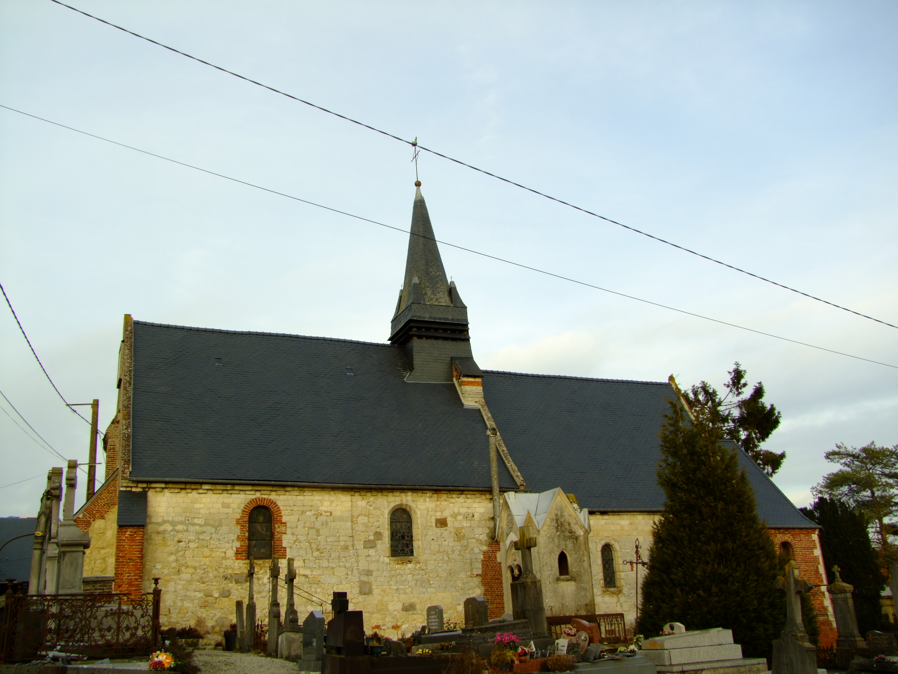

Cliquez sur la photo de l'église qui vous intéresse pour plus de détails
Bancigny
Eglise Saint-Nicolas. Idéalement située au cœur du village, on la reconnaît à sa tour tronquée. Elle
subit de nombreuses transformations au fil des siècles. Très bien restaurée par
une équipe de Hollandais bénévoles, à l’instar de Jeantes. Plus récemment, un
chantier d’insertion fit un travail remarquable.
A l’intérieur, admirons les fonts baptismaux tournaisiens au XII ème siècle et les
vitraux modernes.

Burelles
Eglise Saint-Martin. Sans doute la plus emblématique de toutes les églises fortifiées. Elle possède tous les attributs d'un château-fort : meurtrières, échauguette, bretèche, salle de refuge. Une construction en forme de croix grecque, greffée sur l'ancien chœur en pierre blanche. Un majestueux maitre-autel en marbre, hérité de la chartreuse du val Saint-Pierre, démantelée à la révolution
Braye-en-Thiérache
Eglise Saint-Marcelin et Saint-Pierre. Faut-il penser que la chartreuse du Val Saint-Pierre, toute proche,
pouvait exonérer l’église de Braye de tout système de défense ? La
forêt avoisinante très dense protégeait peut-être mieux qu’ailleurs
la population des hordes de pillards. L’église n’en est pas moins très
intéressante.
Dagny Lambercy
Eglise Saint-Pierre. Une église toute simple, juchée sur un talus qui fit craindre pour sa
stabilité. Un plan rectangulaire sans transept. Contrairement à toutes
les églises voisines, elle n’est pas fortifiée. Il est vrai qu’on était un peu
à l’écart des zones de conflits contre les armées espagnoles. A côté de
l’église, se trouve un très beau pigeonnier-porche, bien restauré.

Fontaine les Vervins
Eglise Saint-Martin. Sans doute la plus élancée de
toutes les églises fortifiées qui
nous ont habitués à des formes
plus rondes et plus massives.
On croirait sa flèche pointue
destinée à percer la voûte céleste.
Il existe une inscription de 1623 à
l’intérieur du donjon, se référant
à la fortification de l’église. En
façade, deux échauguettes sur
encorbellement.

Franqueville
Eglise Saint-Jean Baptiste.
De l’ancienne église romane, il nous reste le clocher en pierre
blanche. Les transformations sont visibles sur tous les murs. La
municipalité a entrepris des travaux de restauration à
l’intérieur, mettant à jour la présence de peintures murales
comparables à celles de l’abbaye de Saint-Michel.
Gercy
Eglise Saint-Michel. Construction massive du XIXème siècle, juchée sur un éperon. La
seule église de la paroisse, avec Landouzy-la-Cour, à n’avoir pas
été construite ou remaniée au cours des Guerres de Religion.
Gronard
Eglise Saint- Thiou (diminutif de Saint-Théodulphe). Village natal de ce moine laboureur, dont la piété lui valut de devenir Père Abbé de l’abbaye de Saint-Thierry près de Reims. La date de 1534 gravée sur un chapiteau est celle de la consécration de la construction en pierre. La nef fut reconstruite en briques par la communauté d’habitants. Très beau motif d’une croix de Saint-André en briques vitrifiées sur le côté sud de la nef.
Harcigny
Eglise saint-Martin. On aurait pu penser qu’elle ne comptait pas au nombre des églises
fortifiées si on n’avait découvert au cours d’une récente restauration la
présence de meurtrières. L’église fut tellement remaniée et reconstruite
au fil des siècles que le système défensif est presque inexistant.
Hary
Eglise Saint-Corneille et Saint-Cyprien. En dehors d’une tourelle sur le donjon, il n’existe aucun dispositif de défense dans cette église, ni de meurtrières. L’exemple même de la défense passive. Il est vrai qu’elle se trouvait au milieu des propriétés de chasse des sieurs de Coucy et à proximité immédiate du château dont il ne reste plus rien.
Houry
Eglise Saint-Médard. La plus modeste des églises de la vallée de la Brune, mais non dénuée de charme. Elle fut détruite à plusieurs reprises notamment par le prince de Condé, vainqueur de la bataille de Rocroi. Un plan rectangulaire tout simple, sans transept ni sacristie, fièrement défendu par une tour fortifiée en façade nord.
La Bouteille
Eglise Notre-Dame. Une des rares églises à avoir été construite d’emblée fortifiée.
Vraisemblablement l’œuvre des moines de l’abbaye de Foigny
toute proche.
Elle présente un plan original : un rectangle flanqué de quatre
tours à chaque extrémité. Les murs sont en moellons de grès, de
quoi assurer une solide résistance à toute forme d’agression.
A l’intérieur, une trappe vitrée nous montre les soubassements.
Landouzy-la-Cour
Eglise Notre-Dame de l’Assomption.
Il ne reste plus rien de l’ancienne église fortifiée. Une nouvelle
église fut construite au XIX ème siècle.
Depuis quelques années, la municipalité a entrepris avec le
personnel et une équipe de bénévoles de restaurer
complètement l’édifice : maçonnerie, charpente, peinture,
menuiserie.
Un exemple à suivre : faire tant de choses avec si peu de
moyens.
Laigny
Eglise Saint-Martin. Une silhouette très caractéristique avec une haute tour-campanile et sa couverture à deux pans. Elle rivalise en hauteur avec l’église de Prisces, proche des 25 mètres. Un mauvais souvenir de 1914 : il reste un obus planté dans le mur de l’église.


Marfontaine
Eglise Saint-Jean. Architecture très sobre, sur plan rectangulaire. L’ASAT
apporta son aide pour la restauration intérieure faite
avec beaucoup de goût.
Nampcelles-la-Cour
Eglise Saint-Martin
Bâtie à flanc de côteau, elle domine fièrement la vallée. Son
donjon en pierre tendre, très rare en Thiérache, est érodé par
les intempéries. La population eut à subir des combats
sanglants contre les agresseurs espagnols. A l’intérieur, le
mobilier et la statuaire sont très riches, mais
malheureusement inaccessibles en raison des travaux. Le
projet de rénovation est en cours.
Plomion
Eglise Notre-Dame de l’Assomption.
Une totale réussite de restauration, au terme d’un chantier qui a duré quatre
ans. L’église n’a aucun élément extérieur en pierre. Autour de la chapelle des
Templiers qui en constituait le noyau, les bâtisseurs ont construit le donjon, les
bas-côtés et le chœur en briques. On visite les salles de refuge à l’étage. Au rez-de-chaussée, un pupitre numérique très didactique vous invite à une visite
virtuelle.
Prisces
Eglise Saint-Médard. Un contraste entre la massivité du donjon haut de 25 mètres et le chœur caractéristique de l’architecture cistercienne du XIIème siècle qui en fait l’une des plus anciennes églises fortifiées. Le bâtiment a été très remanié au fil des siècles. Un détail amusant : les figurines situées sous la corniche sur le versant sud, qu’on appelle des modillons.Rougeries
Eglise Saint-Maurice. C’est une véritable livre d’Histoire de notre région, tant les
éléments architecturaux y ont laissé des traces. Un édifice très
bien restauré, notamment par un chantier d’insertion, avec des
vitraux récents, offerts par de généreux donateurs.
Saint-Algis
Fièrement campée au milieu du village,
l’église en impose par ses formes massives.
Sur les murs de la nef, côté nord,
subsistent les pierres et les arcatures
ogivales de la première construction. La
présence des briques remonte à la fin du
XVI ème lors de la transformation de
l’édifice en forteresse.
Saint Gobert
Eglise Saint-Rémi
Un chœur gothique, une nef romane et une tour du XVI ème
siècle. Les peintures intérieures très bien restaurées et un
beau tableau Renaissance
Saint-Pierre lès Franqueville
Eglise Saint-Pierre. Une des rares églises construites fortifiées d’un seul jet et non transformées.
Très bel ensemble avec ses contreforts sur les quatre côtés de la tour.
Thenailles
Eglise Saint-Côme et Saint-Damien. Bâtiment en briques, sans fortifications, construit en 1807
sur le site de l’ancienne abbaye de l’ordre des Prémontrés.
Le maître-autel est un des rares vestiges du XVIII ème
siècle.